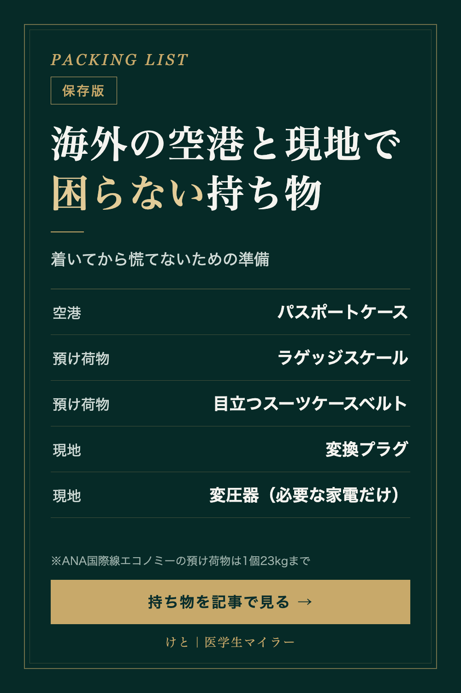

PACKING LIST
海外の空港と現地で困らない持ち物｜荷物の重さと、変換プラグ・変圧器の違い
2026/10/18 時点の情報
空港での手続きから、預け荷物の重さ、現地での充電まで。海外旅行で「着いてから困る」ことを減らすための持ち物を、公式のルールと一緒にまとめました。
※PR｜この記事には楽天ROOMの商品リンクがあります。リンクから購入されると、運営者に紹介報酬が入ります。商品は、使った感想ではなく、公式のルールと商品の仕様（販売ページの表記）を見比べて選んでいます。

1. 空港：パスポートと搭乗券をひとまとめに
保安検査・出国審査・搭乗口と、空港ではパスポートと搭乗券を何度も出し入れします。1か所にまとめておくと、探す手間が減ります。
- パスポートケース スキミング防止（楽天ROOM）：パスポート・搭乗券・現金・カードを1つにまとめられる。スキミング防止機能付き
- AGILITY ボヤージュ ロロマ（楽天ROOM）：パスポートとスマホが入り、ショルダーとしても使える本革のトラベルウォレット
- セキュリポ（楽天ROOM）：パスポートや現金を服の下に隠して持ち歩ける防犯ポーチ
2. 預け荷物：重さとサイズの上限
ANA国際線の場合、エコノミークラスとプレミアムエコノミーで無料で預けられるのは、1個あたり23kgまで、3辺の合計158cm以内（キャスターと持ち手を含む）です。無料の個数は運賃によって0〜2個です。
帰りはお土産で重くなりがちです。ホテルを出る前に重さを測っておくと、空港のカウンターで慌てずに済みます。
- ドリテック JALオリジナル ラゲッジスケール（楽天ROOM）：ホテルを出る前に荷物の重さを測れる
- スーツケースベルト TSAロック付き（楽天ROOM）：TSAロック付き。派手な色で、ターンテーブルでも自分のスーツケースを見つけやすい
- Apple AirTag（楽天ROOM）：荷物の場所をiPhoneの「探す」で確認できるスマートタグ。預け荷物に入れてよいかは、乗る航空会社の案内を確認してください
3. 現地：変換プラグと変圧器は別もの
変換プラグは、コンセントの「形」を合わせるもの。変圧器は、「電圧」を変えるための機械です。
日本の電圧は100Vで、世界で最も低い水準です。海外は、アメリカ中心の110〜130Vのエリアと、ヨーロッパやアジア中心の220〜240Vのエリアに大きく分けられます。
充電器や機器の裏に「INPUT: 100-240V」と書かれていれば、世界中の電圧に対応しているので変圧器は要りません。スマホ・ノートPC・デジカメ・タブレットは、一般に変圧器なしで使えるとされています。ドライヤー・ヘアアイロン・電気ケトルなどは、変圧器が必要になる場合があります。変圧器には安全に使える消費電力の上限（定格容量）があるので、使う家電の消費電力も確認してください。
- 海外用変換プラグ（楽天ROOM）：世界200カ国以上対応として販売されている、USB2ポート付きの変換プラグ
- BESTEK 海外旅行用変圧器（楽天ROOM）：変換プラグ付きの変圧器
まとめ
- 空港では、パスポートと搭乗券を1か所に
- 預け荷物は1個23kg・158cm以内（ANA国際線エコノミーの場合）。帰りは出発前に重さを測る
- 「INPUT: 100-240V」なら変換プラグだけ。そうでない家電は変圧器も
紹介した商品は、楽天ROOMのコレクションにまとめています。▶ 海外の空港と現地で困らないセット（楽天ROOM）